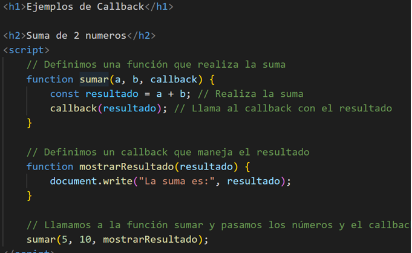

Promesas y Asincronía en JavaScript
Concepto deasincronía en JavaScript
La asincronía en JavaScript permite ejecutar tareas sin bloquear el hilo principal del programa. Esto es útil cuando necesitas realizar operaciones que pueden llevar tiempo, como acceder a una API o leer archivos. La asincronía se maneja comúnmente con callbacks, promesas y async/await.
Callbacks
Un callback en JavaScript es una función que se pasa como argumento a otra función y se ejecuta después de que se completa la tarea de la función que la recibió. Los callbacks son una parte fundamental de la programación asíncrona en JavaScript.
Ejemplo: Suma con Callback
Promesas
Una promesa en JavaScript es un objeto que representa la eventual finalización (o falla) de una operación asíncrona y su valor resultante. Las promesas son una forma de manejar operaciones asíncronas de manera más legible y manejable que los callbacks.
Ejemplo: Obtener Posts de una API

Posts obtenidos:
Async/Await
Ejemplo 2 promesas: Tomando datos de una API de prueba de internet. Utilizaremos esta api de prueba: https://jsonplaceholder.typicode.com/post
async y await son palabras clave que permiten escribir código asincrónico de manera más clara y estructurada. async declara una función asincrónica y await se usa dentro de esta para esperar el resultado de una promesa.
Ejemplo: Obtener Posts con Async/Await
Ejemplo 2 promesas:
Posts obtenidos con Async/Await:

Ejercicio: Mostrar Usuarios
El objetivo de este ejercicio es crear una página web que obtenga una lista de usuarios desde una API y muestre sus nombres y correos electrónicos en una lista.
Obteniendo usuarios de JSONPlaceholder
Lista de Usuarios:
Simplificando la promesa
Ahora mostramos los post en una lista dinámica en html, primero agregamos la estructura html donde se cargaran los datos:
Posts obtenidos de la API
Usodeasync/await
async y await son palabras clave que permiten escribir código asincrónico de manera más clara y estructurada
async:Seusaparadeclarar una función asincrónica.
Seusadentrodeunafunción asincrónica para esperar el resultado de una promesa.
Ejemplo async/await
Vamos a escribir una función que simula una llamada a una API usando promesas y async/await
async function llamadaApi() {
return new Promise((resolve) => {
setTimeout(() => {
resolve({ mensaje: "¡Datos obtenidos correctamente!", fecha: new Date().toLocaleString() });
}, 1500);
});
}
async function llamarApiConAsyncAwait() {
try {
let datos = await llamadaApi();
// Mostrar el resultado en la página
const resultDiv = document.getElementById('resultado-async');
resultDiv.innerHTML = `${datos.mensaje}
Fecha: ${datos.fecha}`;
} catch (error) {
const resultDiv = document.getElementById('resultado-async');
resultDiv.innerHTML = `Error: ${error}`;
}
}
Correos de Usuarios
Lista de correos electrónicos de los usuarios obtenidos de la API: